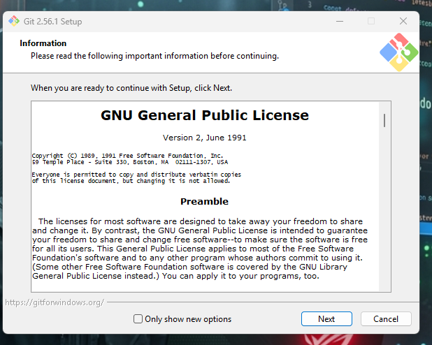
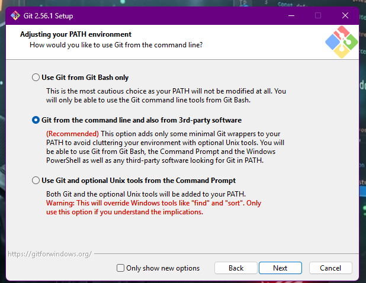
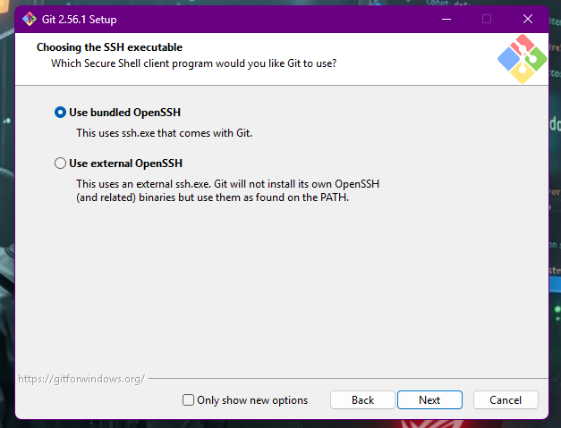
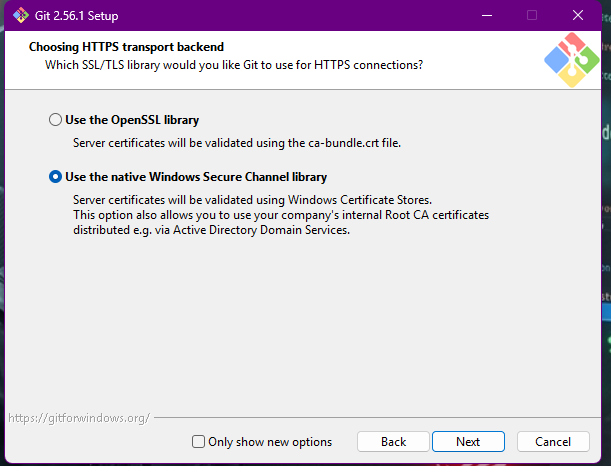
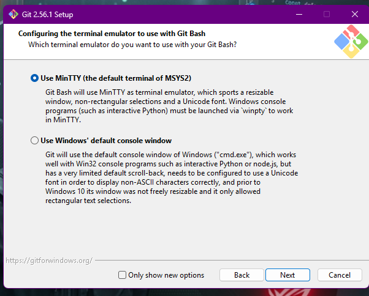
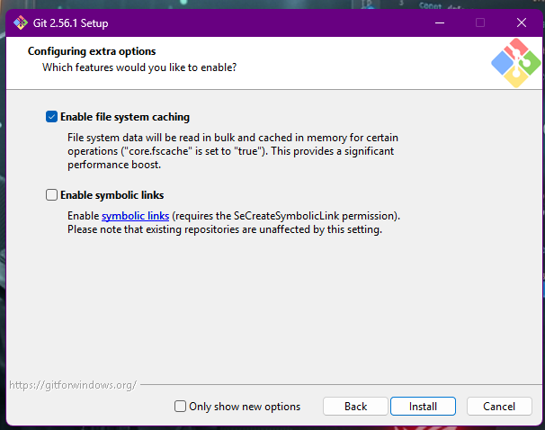
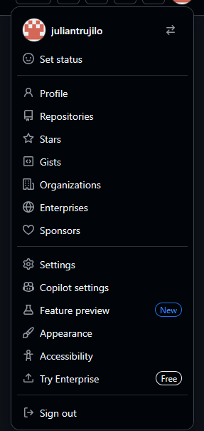

Construye tu evidencia AA1-EV04: instalación y configuración de Git y GitHub
Sigue esta guía en orden: instalarás y configurarás Git en tu equipo, crearás y configurarás tu cuenta y un repositorio de prueba en GitHub, tomarás los pantallazos y armarás tu documento en PDF para subirlo a Zajuna.
Antes de empezar: qué vas a construir y cómo usar esta guía
Esta Guía de Estudio es un paso a paso para que construyas tu evidencia GA7-220501096-AA1-EV04. Esta vez sí vas a ejecutar cosas en tu equipo: instalar Git, configurarlo, crear tu cuenta de GitHub y enviar un repositorio de prueba. Cada paso te da comandos y textos modelo y te indica cómo comprobar que quedó bien, y qué pantallazo tomar.
| Parte | Qué haces | Tiempo |
|---|---|---|
| A · Prepara | Entiendes la evidencia y alistas tu equipo, tu correo y tus pantallazos | ≈ 18 min |
| B · Git local | Instalas Git, lo verificas, configuras tu identidad y lo pruebas con un repositorio local | ≈ 40 min |
| C · GitHub remoto | Creas tu cuenta, resuelves la autenticación, creas el repositorio de prueba y haces el primer push | ≈ 43 min |
| D · Documento y entrega | Reúnes los pantallazos, redactas, revisas el formato, exportas a PDF y subes a Zajuna | ≈ 73 min |
Antes de instalar nada, tienes que saber exactamente qué se te pide. La evidencia GA7-220501096-AA1-EV04 se llama «Instalación y configuración de herramienta de versionamiento (local/web)». En palabras simples: instalas y configuras Git en tu computador (versionamiento local), configuras tu cuenta y un repositorio en GitHub (versionamiento remoto) y entregas un documento en PDF que cuenta cómo lo hiciste, con el paso a paso y pantallazos.
El instrumento de evaluación oficial revisa estos 4 indicadores. Cada uno se marca como cumple o no cumple:
| N.º | Indicador oficial | Dónde lo cubres |
|---|---|---|
| 1 | Realiza la instalación de la herramienta de versionamiento correctamente. | Pasos 3 y 4: instalas Git y compruebas la versión |
| 2 | Instala sin errores herramienta de versionamiento local. | Pasos 4, 5 y 6: verificación, identidad y prueba con un repositorio local |
| 3 | Configura herramienta de versionamiento remota. | Pasos 7 a 10: cuenta de GitHub, autenticación, repositorio remoto y primer push |
| 4 | Presenta el informe cumpliendo con las normas básicas de presentación de documentos. | Pasos 11 a 14: portada, introducción, objetivo, pantallazos con pie de figura, formato y PDF |
Criterio de evaluación: «Selecciona y configura herramientas de versionamiento para el control de cambios en el código» (resultado de aprendizaje 220501096-01). La guía pide como mínimo: portada, introducción, objetivo y el paso a paso con pantallazos de la instalación tanto local como remota. Este es el esqueleto que seguirás; cópialo a un documento nuevo (Word o Google Docs):
• Cada paso lleva su pantallazo real de tu equipo, con pie de figura.
• Lo que instalas y configuras debe funcionar de verdad: el instructor puede comprobarlo.
• El documento es tuyo: los modelos son punto de partida, no para copiar y pegar.
Programa-Git y el video es la EV05 (Sesión 4).- Sé explicar con mis palabras qué entrego: un PDF con el paso a paso y pantallazos de Git y GitHub.
- Tengo el esqueleto copiado en un documento nuevo.
- Sé en qué paso cubro cada uno de los 4 indicadores.
Este es el Paso 0: dejar todo listo para que nada te detenga a mitad de camino. Necesitas:
- Un computador con Windows, macOS o Linux y permisos para instalar programas (en equipos de sala o prestados puede pedirte contraseña de administrador).
- Conexión a internet para descargar Git y usar GitHub.
- Un correo electrónico que sí revises: lo usarás para crear tu cuenta de GitHub y para configurar tu identidad en Git. Elige uno que no te dé pena mostrar en el documento (puedes tapar partes en los pantallazos).
- Una forma de tomar pantallazos: en Windows la tecla Windows + Mayús + S (Recortes), en macOS Mayús + Comando + 4, en Linux la herramienta de capturas de tu escritorio.
- Un editor de documentos (Word, Google Docs o LibreOffice) con la opción de exportar a PDF.
Crea ahora la carpeta donde guardarás los pantallazos y la carpeta de práctica (abre la terminal en el lugar donde quieras tenerlas). Nombra cada captura con un número (por ejemplo 04_git_version.png); así no tendrás que buscarlas al armar el documento.
Qué hace cada comando
| Comando | Qué hace | Cómo se lee, parte por parte |
|---|---|---|
mkdir EV04_pantallazos | Crea una carpeta nueva con ese nombre en la ubicación donde estás. | mkdir = make directory: crear carpetael nombre = cómo se llamará la carpeta |
mkdir prueba-git | Crea una carpeta nueva con ese nombre en la ubicación donde estás. | mkdir = make directory: crear carpetael nombre = cómo se llamará la carpeta |
git --version y explica en tu documento qué versión tenías o actualízala. El instructor necesita ver la evidencia de la instalación y la configuración en tu equipo.- Tengo permisos para instalar programas y conexión a internet.
- Sé qué atajo uso para tomar pantallazos.
- Creé las carpetas EV04_pantallazos y prueba-git.
El primer indicador pide que realices la instalación de la herramienta de versionamiento correctamente. Instalarás Git, el sistema de control de versiones que corre en tu equipo (versionamiento local).
Windows (instalador oficial)
- Entra a git-scm.com/install/windows ↗ y descarga el instalador para Windows. Toma el pantallazo 1.
- Ejecuta el instalador y avanza con Next. Debajo de esta lista tienes las 12 pantallas del instalador en orden, con lo que debes elegir en cada una (son de la versión 2.56.1; la tuya puede variar un poco). Si dudas en una pantalla, deja la opción que viene marcada por defecto; estas son las que conviene mirar con calma:
- Editor por defecto: elige uno que conozcas (por ejemplo Visual Studio Code o Notepad). El editor Vim que aparece de primero es difícil si nunca lo has usado.
- Ajustar el PATH: deja «Git from the command line and also from 3rd-party software». Así el comando
gitfunciona en cualquier terminal. - Credential Manager: deja activado «Git Credential Manager»; te servirá para iniciar sesión en GitHub desde el navegador (paso 8).
- Nombre de la rama inicial: puedes dejar «Let Git decide» (más adelante la fijarás en
main) o elegir «Override» con el nombremain.
- Pulsa Install, espera y finaliza. Toma el pantallazo 3 de la pantalla final o de Git Bash abierto desde el menú Inicio.

Es la primera pantalla del instalador: muestra la licencia GNU General Public License. Léela si quieres y presiona Next. Toma aquí tu pantallazo del inicio de la instalación.

El instalador propone los componentes ya marcados (iconos, integración con el Explorador de Windows con «Open Git Bash here», Git LFS, asociación de archivos .git* y .sh, actualizaciones y perfil en Windows Terminal). Déjalos como vienen y presiona Next. Abajo indica el espacio necesario en disco (en este equipo, unos 342 MB).

Por defecto el instalador propone Vim, y él mismo advierte que es difícil de usar y que se recomienda cambiarlo por un editor moderno. Abre la lista y elige «Use Visual Studio Code as Git's default editor» (o el editor que conozcas). Presiona Next.

Por defecto está marcada «Let Git decide», que usa el nombre actual de Git para la rama inicial (en esta versión, «master»). Marca «Override the default branch name for new repositories» y escribe main, que es el nombre que usa GitHub. Así no tendrás que renombrar la rama después. Presiona Next.

Deja marcada la opción del medio, «Git from the command line and also from 3rd-party software» (la recomendada). Así puedes usar git en Git Bash, en el Símbolo del sistema y en PowerShell, sin cambiar herramientas de Windows como find y sort. Es la que evita el error «git no se reconoce como un comando».

Deja «Use bundled OpenSSH», que usa el ssh.exe que viene con Git. Solo lo necesitarás si luego conectas con GitHub mediante llaves SSH; para esta evidencia con HTTPS no cambia nada. Presiona Next.

Define qué librería usa Git para validar los certificados cuando te conectas a GitHub por HTTPS. Deja marcada la opción que viene por defecto, «Use the native Windows Secure Channel library», que usa los certificados de Windows (también sirve en redes de empresa o de centros de formación). Presiona Next.

Define cómo trata Git los saltos de línea de los archivos de texto, que en Windows y en Linux o macOS se guardan distinto. Deja marcada la opción por defecto, «Checkout Windows-style, commit Unix-style line endings», que es la recomendada en Windows para proyectos que se comparten entre sistemas. Presiona Next.

Elige la ventana que usará Git Bash. Deja marcada «Use MinTTY (the default terminal of MSYS2)», la opción por defecto: permite cambiar el tamaño de la ventana, seleccionar texto cómodamente y mostrar acentos. Presiona Next.

Define qué hace git pull cuando tu rama y la del remoto avanzaron por separado. Deja marcada la opción por defecto, «Merge»: crea un commit que une ambas ramas y conserva el historial del trabajo en paralelo. Las otras dos, Rebase y Fast-forward only, son para quien ya domina el flujo de ramas. Presiona Next.

Esta es la pantalla clave para conectarte con GitHub. Deja marcado «Git Credential Manager»: al hacer tu primer push se abre una ventana del navegador para iniciar sesión en GitHub y Git guarda la credencial, sin que escribas contraseña. Si eliges «None», Git te pedirá usuario y token en cada operación HTTPS. Presiona Next.

Última pantalla de opciones. Deja «Enable file system caching» marcada (acelera Git) y «Enable symbolic links» sin marcar, tal como vienen. Aquí el botón Next cambia a «Install»: presiónalo para empezar la instalación y espera a que termine.
También puedes instalar desde la terminal con winget (Windows 10/11); es válido, pero en tu documento muestra el pantallazo del proceso que realmente usaste:
Qué hace cada comando
| Comando | Qué hace | Cómo se lee, parte por parte |
|---|---|---|
winget install --id Git.Git -e --source winget | Instala Git desde el administrador de paquetes de Windows, sin usar el instalador gráfico. | winget = el administrador de paquetes de Windowsinstall = instalar un programa--id Git.Git = el programa exacto: Git-e = coincidencia exacta del nombre--source winget = usa el catálogo oficial de winget |
macOS y Linux
Abre la terminal y usa el comando de tu sistema. En macOS, si ejecutas git sin tenerlo, el sistema te ofrece instalar las herramientas de línea de comandos.
Qué hace cada comando
| Comando | Qué hace | Cómo se lee, parte por parte |
|---|---|---|
xcode-select --install | En macOS instala las herramientas de línea de comandos de Apple, que incluyen Git. | xcode-select = gestiona esas herramientas--install = instalarlas |
brew install git | Instala Git con Homebrew, el administrador de paquetes de macOS. | brew = Homebrewinstall = instalargit = el paquete a instalar |
sudo apt update | En Ubuntu o Debian, actualiza la lista de paquetes disponibles antes de instalar. | sudo = ejecutar como administradorapt = el administrador de paquetesupdate = actualizar la lista de paquetes |
sudo apt install git | En Ubuntu o Debian, instala Git. | sudo = ejecutar como administradorapt install = instalar un paquetegit = el paquete a instalar |
sudo dnf install git | En Fedora, instala Git. | sudo = ejecutar como administradordnf install = instalar un paquetegit = el paquete a instalar |
git; ciérrala y ábrela de nuevo después de instalar.- Descargué o instalé Git con el método de mi sistema operativo.
- Tomé los pantallazos 1, 2 y 3 (descarga, opciones importantes y fin de la instalación).
- Cerré y volví a abrir la terminal (o Git Bash) después de instalar.
El indicador 2 pide que instales Git local sin errores. La prueba es simple: preguntarle su versión.
Qué hace cada comando
| Comando | Qué hace | Cómo se lee, parte por parte |
|---|---|---|
git --version | Muestra la versión de Git instalada. Si responde, Git está instalado y la terminal lo encuentra (está en el PATH). | git = el programa--version = pide que muestre su versión |
| Lo que ves | Qué significa | Qué hacer |
|---|---|---|
| git: command not found o «git no se reconoce como un comando» | La terminal no encuentra Git | Cierra y abre la terminal; si sigue, reinstala Git y revisa la opción del PATH |
| Abre un cuadro pidiendo instalar herramientas (macOS) | Git aún no está instalado | Acepta la instalación de las herramientas de línea de comandos y repite |
| Responde con un número de versión | Git quedó instalado | Toma el pantallazo 4 y sigue |
- git --version me responde con un número de versión.
- Tomé el pantallazo 4 con el comando y la respuesta visibles.
Git necesita saber quién eres para firmar tus commits. Esa información va en dos valores: user.name y user.email. Usa el mismo correo con el que crearás (o ya tienes) tu cuenta de GitHub, para que tus commits queden asociados a ti.
Qué hace cada comando
| Comando | Qué hace | Cómo se lee, parte por parte |
|---|---|---|
git config --global user.name "Tu Nombre Apellido" | Guarda tu nombre. Git lo escribe como autor en cada commit que hagas. | git config = leer o cambiar la configuración de Git--global = para todos tus repositorios en este equipouser.name = el dato que cambias: tu nombre"Tu Nombre Apellido" = el valor, entre comillas; cámbialo por el tuyo |
git config --global user.email "tu_correo@ejemplo.com" | Guarda tu correo. Usa el mismo de tu cuenta de GitHub para que tus commits se asocien a tu cuenta. | git config --global = configuración para todo el equipouser.email = el dato que cambias: tu correo"tu_correo@ejemplo.com" = el valor; cámbialo por el tuyo |
git config --global init.defaultBranch main | Hace que los repositorios nuevos empiecen con la rama principal llamada main, igual que GitHub. | init.defaultBranch = el nombre de la rama inicial al hacer git initmain = el nombre elegido |
git config --global --list | Muestra todo lo que quedó guardado en la configuración global. Sirve para comprobar tu nombre y tu correo. | --list = listar la configuración |
Reemplaza el nombre y el correo por los tuyos. init.defaultBranch main es opcional: hace que los repositorios nuevos empiecen con la rama main (así coincide con GitHub). Requiere una versión reciente de Git; si tu Git no la reconoce, omítela y más adelante usarás git branch -M main.
git config --global --list.- Configuré user.name y user.email con mis datos.
- git config --global --list muestra mis valores.
- Tomé el pantallazo 5.
Para demostrar que Git local funciona (indicador 2), haz una prueba mínima en la carpeta de práctica: crear el repositorio, guardar un archivo y ver el historial. No necesitas más.
Qué hace cada comando
| Comando | Qué hace | Cómo se lee, parte por parte |
|---|---|---|
cd prueba-git | Entra a la carpeta indicada. Desde ahí se ejecutarán los siguientes comandos. | cd = change directory: cambiar de carpetael nombre = la carpeta a la que entras |
git init | Convierte la carpeta actual en un repositorio local: crea la carpeta oculta .git donde Git guarda el historial. | git = el programainit = iniciar un repositorio |
echo "Prueba de instalacion de Git - EV04" > README.md | Crea el archivo con ese texto dentro (si ya existía, lo reemplaza). | echo = escribe un texto> = en lugar de mostrarlo, lo guarda en un archivoREADME.md = el nombre del archivo que se crea |
git status | Muestra qué archivos cambiaron, cuáles están preparados y cuáles Git todavía no sigue. | status = estado del repositorio |
git add README.md | Prepara el archivo para el próximo commit (lo pasa al staging). | add = agregar al área de preparaciónREADME.md = el archivo que preparas; con . se preparan todos |
git commit -m "Agrega README de prueba" | Guarda una versión con lo que preparaste, con un mensaje que explica el cambio. Queda solo en tu equipo. | commit = guardar una versión-m = incluir el mensaje en el mismo comando"mensaje" = qué cambiaste, entre comillas |
git log --oneline | Lista el historial de commits, uno por línea: su código corto y su mensaje. | log = mostrar el historial--oneline = formato resumido de una línea por commit |
Si git commit dice Author identity unknown, falta el paso 5: configura user.name y user.email y repite el commit.
git status debe mostrar el archivo como nuevo antes del add, el commit debe confirmar «1 file changed» y git log --oneline debe listar tu commit con su mensaje.Programa-Git es la EV05 de la próxima sesión.- Ejecuté git init en prueba-git.
- Hice mi primer commit y git log --oneline lo muestra.
- Tomé el pantallazo 6 con todos los comandos visibles.
Ahora pasas al lado remoto (indicador 3). GitHub es la plataforma en la nube que aloja tus repositorios, los respalda y permite compartirlos con tu equipo.
- Entra a github.com y elige Sign up (registrarse). Si ya tienes cuenta, inicia sesión y salta a la captura.
- Escribe tu correo (el mismo de la configuración de Git), una contraseña segura y un nombre de usuario. Elige uno sobrio y profesional: lo verán tus compañeros y futuros empleadores.
- Resuelve la verificación y confirma tu correo con el código que te llegue.
- Cuando veas tu página principal, toma el pantallazo 7 con tu usuario visible.
- Tengo cuenta de GitHub y mi correo está confirmado.
- Tomé el pantallazo 7 sin mostrar datos secretos.
Para enviar código a GitHub tienes que demostrar quién eres. Importante: GitHub ya no acepta la contraseña de tu cuenta cuando haces git push por HTTPS. Tienes tres caminos; para esta evidencia basta con uno:
| Camino | Cómo funciona | Cuándo elegirlo |
|---|---|---|
| Git Credential Manager (recomendado en Windows) | Viene con Git para Windows. Al hacer el primer push abre una ventana del navegador para que inicies sesión en GitHub; guarda la credencial | Si instalaste Git en Windows con las opciones por defecto |
| Personal Access Token (PAT) | Un código que generas en GitHub (Settings, Developer settings, Personal access tokens) y que escribes cuando Git pide la contraseña. Para esta práctica basta el permiso de repositorio (repo) | Si el navegador no se abre o usas macOS/Linux sin gestor de credenciales |
| Llave SSH | Un par de llaves: la pública se registra en GitHub y la privada queda en tu equipo | Alternativa para quien ya la domina; más pasos |
Lo más común: la ventana del navegador de Git Credential Manager aparece sola en el paso 10, cuando hagas el push. Si prefieres el token, créalo antes y guárdalo en un lugar seguro: GitHub lo muestra una sola vez.
Cómo crear tu token (Personal Access Token) paso a paso
- Inicia sesión en
github.com, abre el menú de tu foto (arriba a la derecha) y entra a Settings. - En el menú de la izquierda, baja hasta el final y entra a Developer settings.
- Entra a Personal access tokens → Tokens (classic) y presiona Generate new token → Generate new token (classic). GitHub puede pedirte confirmar tu contraseña o tu código de verificación.
- En Note escribe un nombre que reconozcas, por ejemplo
VSCode-prueba-git. - En Expiration elige una fecha corta (7 o 30 días): si algún día se filtra, dejará de servir solo.
- En Select scopes marca la casilla
repo(permite leer y escribir en tus repositorios). Con eso basta para esta práctica. - Presiona Generate token y copia el código de inmediato (empieza por
ghp_). GitHub lo muestra una sola vez: si cierras la página sin copiarlo, tendrás que crear otro. - Guárdalo en un lugar seguro (un gestor de contraseñas o una nota privada). No lo pegues en tu documento ni en un pantallazo.

Con la sesión iniciada en github.com, presiona tu foto de perfil (arriba a la derecha). Se abre este menú: elige «Settings», que está en el grupo de opciones de abajo, junto a «Copilot settings». Desde ahí llegarás a «Developer settings», donde se crean los tokens.

Dentro de Developer settings, el menú de la izquierda tiene «GitHub Apps», «OAuth Apps» y «Personal access tokens». Despliega «Personal access tokens» y elige «Tokens (classic)» (la otra opción es «Fine-grained tokens»). En la pantalla que se abre presionarás «Generate new token».

Esta es la lista de tus tokens classic; si es tu primera vez aparece «No personal access token created». Presiona el botón «Generate new token» y, en el menú que se despliega, elige «Generate new token (classic)». GitHub puede pedirte confirmar tu contraseña o un código de verificación.
prueba-git y en Repository permissions pones Contents en Read and write. El classic con el permiso repo es más rápido de crear, pero puede acceder a todos tus repositorios; por eso conviene que caduque pronto.Cómo conectarte desde tu editor de código (Visual Studio Code)
Tienes dos formas. La primera no necesita token; la segunda usa el token que acabas de crear.
| Forma | Qué haces en VS Code | Cuándo usarla |
|---|---|---|
| A. Iniciar sesión con tu cuenta | Abajo en la barra lateral izquierda (barra de actividad) presiona el icono de Cuentas y elige Sign in with GitHub; se abre el navegador, autorizas y vuelves al editor. También aparece el aviso de inicio de sesión la primera vez que hagas Push o Publish | Si el navegador se abre sin problema (es lo más simple) |
| B. Usar el token como contraseña | Abre la terminal integrada de VS Code y haz el git push; cuando pida Username escribe tu usuario de GitHub y cuando pida Password pega el token (al pegar no se ve nada: es normal). Si VS Code muestra los campos en un cuadro de texto arriba, haz lo mismo ahí | Si el navegador no se abre, o trabajas en macOS o Linux sin gestor de credenciales |
- Abre tu carpeta de práctica en VS Code: menú File → Open Folder y elige
prueba-git; o, desde Git Bash dentro de la carpeta, escribecode . - Abre la terminal integrada: menú Terminal → New Terminal. Ya estás dentro de tu repositorio.
- Ejecuta el push (lo harás completo en el paso 10, cuando ya tengas el repositorio remoto creado):
Qué hace cada comando
| Comando | Qué hace | Cómo se lee, parte por parte |
|---|---|---|
code . | Abre la carpeta actual en Visual Studio Code. | code = el comando que abre VS Code. = la carpeta en la que estás parado |
git push -u origin main | Sube tus commits de la rama main a GitHub, y deja recordado que main de tu equipo sigue a origin/main. | push = subir commits al remoto-u = recuerda esta conexión para los próximos git push y git pullorigin = a qué remoto se subemain = qué rama se sube |
Después de la primera vez, Git guarda la credencial en tu equipo y ya no te la vuelve a pedir. Si algún día aparece Authentication failed, casi siempre es porque el token caducó o no tenía el permiso repo: crea otro.
Para la alternativa SSH, estos son los comandos (opcional):
Qué hace cada comando
| Comando | Qué hace | Cómo se lee, parte por parte |
|---|---|---|
ssh-keygen -t ed25519 -C "tu_correo@ejemplo.com" | Genera un par de llaves SSH (pública y privada). La pública se registra en GitHub; la privada nunca se comparte. | ssh-keygen = generador de llaves SSH-t ed25519 = tipo de llave moderno y seguro-C = comentario que identifica la llave"tu_correo@ejemplo.com" = tu correo, como etiqueta |
ssh -T git@github.com | Prueba si GitHub reconoce tu llave SSH. Responde con tu nombre de usuario si todo está bien. | ssh = conexión segura a otro equipo-T = no abre una terminal, solo prueba la conexióngit@github.com = el usuario git en el servidor de GitHub |
- Sé cuál método de autenticación voy a usar (Credential Manager o token).
- Si usé token, lo creé con el permiso repo y una fecha de expiración, lo guardé y no aparece en ningún pantallazo.
- Sé cómo conectarme desde Visual Studio Code (iniciar sesión con mi cuenta o usar el token en la terminal integrada).
- Tomé el pantallazo 8.
Vas a crear en GitHub un repositorio vacío de práctica para enviarle tu commit de prueba.
- En GitHub pulsa el botón + (arriba a la derecha) y elige New repository.
- En Repository name escribe
prueba-git(puede ser otro nombre sin espacios ni tildes). - Déjalo en Public, para que el instructor pueda verlo.
- No marques «Add a README file», ni .gitignore ni licencia. Así queda vacío y tu primer push no entra en conflicto.
- Pulsa Create repository. Verás una página con la URL del repositorio, algo como
https://github.com/TU_USUARIO/prueba-git.git. Cópiala: la usarás en el paso siguiente.

Arriba a la derecha, el signo + abre un menú: elige «New repository». En el formulario, escribe en «Repository name» el nombre (por ejemplo, prueba-git); deja «Public»; y deja en «Off» el interruptor de «Add README», en «No .gitignore» y en «No license». Presiona «Create repository». Aquí el formulario aparece todavía vacío.
- Creé el repositorio prueba-git, público y vacío.
- Copié la URL del repositorio.
- Tomé el pantallazo 9.
Aquí cierras el indicador 3: conectas tu repositorio local con el remoto y envías tu commit.
Qué hace cada comando
| Comando | Qué hace | Cómo se lee, parte por parte |
|---|---|---|
git remote add origin https://github.com/TU_USUARIO/prueba-git.git | Conecta tu repositorio local con el repositorio de GitHub. Todavía no sube nada: solo guarda la dirección. | git remote = administra las conexiones con repositorios remotosadd = agregar una conexión nuevaorigin = el nombre corto de esa conexión; por convención se llama originhttps://github.com/TU_USUARIO/prueba-git.git = la URL del repositorio en GitHub; cambia TU_USUARIO por tu usuario |
git remote -v | Muestra las conexiones remotas guardadas y sus URL. Comprueba que el origin quedó bien escrito. | remote = conexiones remotas-v = verbose: muestra también las URL (fetch para bajar, push para subir) |
git branch -M main | Renombra la rama actual a main para que coincida con la de GitHub. | branch = trabajar con ramas-M = renombrar la rama actual aunque ya exista otra con ese nombremain = el nombre nuevo |
git push -u origin main | Sube tus commits de la rama main a GitHub, y deja recordado que main de tu equipo sigue a origin/main. | push = subir commits al remoto-u = recuerda esta conexión para los próximos git push y git pullorigin = a qué remoto se subemain = qué rama se sube |
Qué hace cada línea: git remote add origin URL registra el remoto con el nombre origin; git remote -v muestra la URL para comprobarla; git branch -M main renombra la rama a main; git push -u origin main envía tus commits y deja la rama enlazada para próximos envíos.
Cuando hagas el push, aparecerá la ventana de inicio de sesión (o te pedirá usuario y token). Complétalo y vuelve a la terminal. Luego recarga la página de tu repositorio en GitHub: debes ver tu README.md y tu commit.
| Mensaje | Causa probable | Solución |
|---|---|---|
| remote origin already exists | Ya habías ejecutado git remote add | Ejecuta git remote set-url origin URL con la URL correcta |
| src refspec main does not match any | No hay commits o tu rama no se llama main | Haz el commit del paso 6 y ejecuta git branch -M main |
| Authentication failed o password authentication was removed | Usaste la contraseña de la cuenta o un token sin permiso | Inicia sesión por el navegador (Credential Manager) o usa un token con permiso de repositorio |
| repository not found | URL mal escrita o usuario equivocado | Copia de nuevo la URL desde GitHub y revísala con git remote -v |
| rejected, failed to push some refs | El remoto tiene commits que no tienes (por ejemplo un README) | Para esta práctica crea el repositorio vacío de nuevo |
- git remote -v muestra mi URL de GitHub.
- git push -u origin main terminó sin errores.
- Veo el README.md en la página del repositorio en GitHub.
- Tomé los pantallazos 10 y 11.
El indicador 4 revisa que el paso a paso lleve pantallazos claros. Antes de escribir, comprueba que tienes estas 11 capturas y que se leen:
| N.º | Qué capturas | Qué debe verse | Paso |
|---|---|---|---|
| 1 | Página de descarga de Git | git-scm.com con el botón de descarga o el instalador descargado | 3 |
| 2 | Opciones del instalador | Pantalla del editor, la del PATH y la del Credential Manager | 3 |
| 3 | Instalación terminada | Pantalla final del instalador o Git Bash abierto | 3 |
| 4 | Versión instalada | Terminal con git --version y su respuesta | 4 |
| 5 | Identidad configurada | Terminal con git config --global --list (name y email) | 5 |
| 6 | Prueba local | Terminal con git init, git status, git commit y git log --oneline | 6 |
| 7 | Cuenta de GitHub | Tu perfil o la página principal con tu usuario visible | 7 |
| 8 | Autenticación | Ventana de inicio de sesión del navegador o la pantalla de tokens (sin mostrar el token) | 8 |
| 9 | Repositorio remoto creado | Formulario New repository y la página del repositorio vacío con su URL | 9 |
| 10 | Conexión y envío | Terminal con git remote -v y la salida de git push -u origin main | 10 |
| 11 | Repositorio con el README | La página del repositorio en GitHub ya con tu archivo README.md | 10 |
Cómo tomar buenos pantallazos
- Recorta lo importante: que se vea el comando y su respuesta, sin media pantalla de escritorio.
- Que se lea: aumenta el tamaño de letra de la terminal si hace falta; si al pegarlo en el documento se ve borroso, retómalo.
- Tapa lo sensible: tokens, contraseñas y códigos de verificación. Un recuadro de color sobre el dato basta.
- Un pantallazo por idea, en orden, con nombre de archivo numerado.
- Pie de figura: cada imagen lleva debajo «Figura N. Descripción corta».
- Tengo las 11 capturas guardadas con nombre numerado.
- Todas se leen bien y ninguna muestra contraseñas ni tokens.
- Son de mi equipo y de mi cuenta.
Estas partes son parte de las normas básicas de presentación (indicador 4). Usa los modelos y reescríbelos con tus palabras.
- Mi portada tiene título, nombre, ficha, programa, instructor, centro, código EV04 y fecha.
- Mi introducción nombra Git (local) y GitHub (remoto) y qué muestra el documento.
- Mi objetivo empieza con un verbo en infinitivo e incluye el para qué.
- Escribí el sistema operativo real que uso.
Este es el corazón del documento: el paso a paso con pantallazos que pide la guía, dividido en instalación local (sección 4) y configuración remota (sección 5). Cada paso sigue la misma fórmula: título del paso, qué hiciste y por qué, comando o acción, pantallazo con pie de figura y resultado.
Sigue este orden de secciones, con los pantallazos que reuniste:
| Sección | Qué cuentas | Pantallazos |
|---|---|---|
| 4.1 Descarga e instalación | De dónde descargaste Git, qué opciones elegiste y por qué | 1, 2 y 3 |
| 4.2 Verificación | El comando git --version y la versión obtenida | 4 |
| 4.3 Configuración de la identidad | user.name, user.email y la verificación con --list | 5 |
| 4.4 Prueba local | git init, add, commit y log en la carpeta de práctica | 6 |
| 5.1 Cuenta de GitHub | Cómo creaste y confirmaste la cuenta | 7 |
| 5.2 Autenticación | Método usado y por qué (sin mostrar secretos) | 8 |
| 5.3 Repositorio remoto | Cómo creaste el repositorio de prueba y sus opciones | 9 |
| 5.4 Conexión y primer push | remote add, remote -v, branch -M main y push | 10 |
| 5.5 Verificación en GitHub | El README visible en el repositorio | 11 |
- Cada sección 4.x y 5.x tiene su texto, su pantallazo y su pie de figura.
- Las figuras están numeradas en orden.
- Escribí conclusiones con mis palabras y cité las fuentes que consulté.
El cuarto indicador revisa que presentes el informe con las normas básicas de presentación de documentos. Antes de exportar, revisa:
- Fuente legible (Arial o Calibri, 11 o 12) y títulos consistentes.
- Imágenes del ancho de la página, legibles y con pie de figura numerado.
- Páginas numeradas, sin partes cortadas y con ortografía revisada.
- Todas las partes del esqueleto presentes y en orden.
Para exportar: en Word, Archivo, Guardar como, PDF; en Google Docs, Archivo, Descargar, Documento PDF; en LibreOffice, Archivo, Exportar como PDF. Nombra el archivo, por ejemplo, NOMBRE_APELLIDO_AA1_EV04.pdf (sugerencia), y ábrelo y recórrelo completo: verifica que los pantallazos se vean nítidos y ningún token aparezca.
- Abrí el PDF final y todos los pantallazos se ven legibles.
- Está numerado y sin errores de ortografía evidentes.
- Ningún token ni contraseña aparece en el PDF.
- El archivo tiene un nombre claro.
Entra a Zajuna, al área de la actividad AA1, y abre el espacio Instalación y configuración de herramienta de versionamiento (local/web). GA7-220501096-AA1-EV04. Adjunta el PDF, guarda o envía según el botón que muestre la plataforma y confirma que aparece como entregado. La fecha límite es por confirmar en Zajuna: revísala allí.
- Subí el PDF al espacio de EV04 y vi el estado de entrega.
- Guardé una copia de respaldo del PDF y de mis pantallazos.
Ejemplo completo de un documento EV04 de referencia
Así se ve un documento terminado, con el nivel de detalle esperado. En los recuadros punteados irían tus pantallazos reales. Tu documento debe ser el tuyo: tus capturas, tu sistema, tu usuario y tus propias palabras.
SERVICIO NACIONAL DE APRENDIZAJE SENA
Evidencia: GA7-220501096-AA1-EV04
Aprendiz: [Nombre y apellidos completos]
Programa: Tecnólogo en Análisis y Desarrollo de Software (ADSO)
Ficha: 3389010
Instructor: Julián Andrés Trujillo Morales
Regional Huila, Centro CADPH Garzón
Garzón, noviembre de 2026
1. Introducción
El control de versiones permite registrar los cambios del código y volver a un estado anterior cuando algo falla. Para trabajar con él se necesitan dos herramientas complementarias: Git, que se instala en el equipo del desarrollador y registra el historial de forma local, y GitHub, una plataforma en la nube que aloja repositorios remotos para respaldar y compartir el código. Este documento describe paso a paso, con pantallazos, la instalación y configuración de Git en un equipo con Windows 11, la creación de una cuenta de GitHub y la conexión de un repositorio local con uno remoto mediante una prueba de envío.
2. Objetivo
Instalar y configurar Git como herramienta de versionamiento local y GitHub como herramienta de versionamiento remoto, verificando su funcionamiento con un repositorio de prueba, para el control de cambios del código en los proyectos de desarrollo de software.
3. Requisitos y entorno
Equipo portátil con Windows 11, conexión a internet, correo electrónico personal y navegador web. Herramientas: Git, Git Bash y una cuenta de GitHub.
4. Instalación y configuración de Git (versionamiento local)
4.1 Descarga e instalación
Se descargó el instalador oficial desde git-scm.com y se ejecutó con las opciones recomendadas: editor Visual Studio Code, comando git disponible desde la línea de comandos y Git Credential Manager activado, para poder iniciar sesión en GitHub desde el navegador.
Figura 1. Descarga del instalador de Git.
Figura 2. Opciones elegidas durante la instalación.
Figura 3. Instalación finalizada.
4.2 Verificación de la instalación
Para comprobar que Git quedó instalado se abrió Git Bash y se ejecutó el comando git --version, que respondió con la versión instalada.
Figura 4. Verificación de la versión de Git instalada.
4.3 Configuración de la identidad
Se configuraron el nombre y el correo del autor con git config --global user.name y git config --global user.email, y se verificaron con git config --global --list.
Figura 5. Identidad configurada en Git.
4.4 Prueba con un repositorio local
En la carpeta prueba-git se ejecutó git init, se creó un archivo README.md, se guardó con git add y git commit y se consultó el historial con git log --oneline. El historial mostró el commit realizado, lo que confirma que Git local funciona sin errores.
Figura 6. Prueba de Git local.
5. Configuración de GitHub (versionamiento remoto)
5.1 Creación de la cuenta
Se creó la cuenta en github.com con el mismo correo configurado en Git y se confirmó el correo electrónico.
Figura 7. Cuenta de GitHub creada.
5.2 Autenticación
Se utilizó Git Credential Manager, que abre una ventana del navegador para iniciar sesión en GitHub, porque GitHub ya no admite la contraseña de la cuenta en las operaciones por HTTPS.
Figura 8. Autenticación con GitHub.
5.3 Creación del repositorio remoto de prueba
Se creó el repositorio público prueba-git sin README, para que quedara vacío.
Figura 9. Repositorio remoto vacío creado en GitHub.
5.4 Conexión y primer push
Se conectó el repositorio local con git remote add origin, se comprobó con git remote -v, se fijó la rama con git branch -M main y se envió el commit con git push -u origin main.
Figura 10. Conexión con el remoto y primer envío.
5.5 Verificación en GitHub
Al recargar la página del repositorio se observó el archivo README.md y el mensaje del commit, lo que confirma que la herramienta de versionamiento remota quedó configurada.
Figura 11. Repositorio remoto con el archivo enviado.
6. Conclusiones
Se instalaron y configuraron las dos herramientas de versionamiento: Git en el equipo, con su identidad de autor verificada mediante un repositorio de prueba, y GitHub como repositorio remoto, al que se conectó el repositorio local y se envió el primer commit con git push. De esta forma el equipo queda preparado para controlar los cambios del código y compartirlos.
7. Referencias
Git. (s. f.). Descargas de Git. https://git-scm.com/downloads
Git. (s. f.). Documentación oficial de Git. https://git-scm.com/doc
GitHub. (s. f.). Documentación de GitHub. https://docs.github.com
Antes de la Sesión 4: lo que viene con EV05
En la Sesión 4 trabajaremos la evidencia EV05: práctica con Git local y remoto, con video. Usarás todo lo que instalaste hoy para hacer el ejercicio completo y mostrarlo en un video. La fecha y la hora las encuentras en el Hub y en el anuncio de la sesión.
Para llegar preparado:
- Verifica que
git --versionygit config --global --listfuncionan en tu equipo. - Comprueba que puedes iniciar sesión en GitHub y que tu autenticación funciona (que el
pushde tu prueba salió bien). - Ten tu EV04 entregada en Zajuna: así llegas con la herramienta lista.
- Ten a la mano un programa para grabar la pantalla (por ejemplo la grabadora de Windows, OBS o Teams).
Qué hace cada comando
| Comando | Qué hace | Cómo se lee, parte por parte |
|---|---|---|
git --version | Muestra la versión de Git instalada. Si responde, Git está instalado y la terminal lo encuentra (está en el PATH). | git = el programa--version = pide que muestre su versión |
git config --global --list | Muestra todo lo que quedó guardado en la configuración global. Sirve para comprobar tu nombre y tu correo. | --list = listar la configuración |
git status | Muestra qué archivos cambiaron, cuáles están preparados y cuáles Git todavía no sigue. | status = estado del repositorio |
Lista de chequeo final (auto-auditoría del aprendiz)
Marca cada casilla antes de subir tu evidencia. Si las 13 están marcadas, tu documento cumple lo que pide la guía y el instrumento de evaluación.